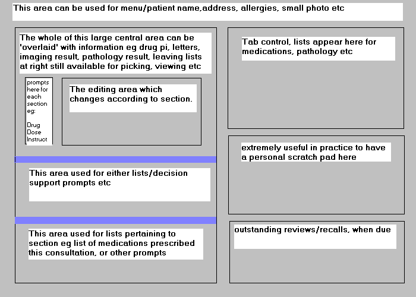

(Taken from Richards Terry´s Design Philosophy at www.gnumed.net/rterry)
Uncluttered screen without wasting screen real estate.
Pleasant, aesthetic view.
As few as possible pop-up elements; static screen elements should be given preference.
As few as possible modal forms. Data belonging together should be on the same visual plane. Peripheral information should not distract the attention attention.
Core information (eg medications, tasks to do during consultations, recalls etc) should be visible while working in different sections.
Use of colors to highlight and separate information. The use of colors should be customizable.
Data entry and presentation should follow a recurring pattern. The same type of information should be displayed and entered at the same place in different sections where possible.
Program control: Primarily keyboard oriented control, every action should be accessible via keyboard shortcuts Mouse oriented control must be possible, too.
Ease of use: Only very few steps to find an option. Key strokes should be kept to a minimum.key strokes should be kept to a minimum, there should be no heavy reliance on menu's.
Customizability: The program should provide the user with timely and appropriate information in his style and language.
Contextual and weighted data presentation: If possible, information should be presented in a weighted and contextual fashion. Statistics about information use should be collected in these cases.
Medical information usually can be presented as groups of 4-10 parameters. It is therefore possible to come up with a gui design for data entry where all segments of a medical records program use the same format of data input. In GnuMed this fact is reflected by a graphic design that is called the 'editing area'.
The area of the screen where data is entered (`editing area´) will be implemented as an widget which can be customized to the various groups of medical information.
This editing area does not 'pop up' in a window. It stays in the same place on the screen but changes appearance according to the type of data the user is entering.
Because it looks and functions the same, no matter what category of data is being entered, there is no need to for the user to learn how to use multiple sections of a program, no need to have multiple different designs of pop up dialogs as is common in most medical programs.
In addition, as a programmer will quickly realise, it can lead to a reduction in computer code needed to generate the display and call in information from the database for contextual display, as generic subroutines can be developed to work across all sections of medical information.
In most sections of the program the user enters very little information as most of it will be 'autofilled' in by the program. In GnuMed, The context of the editing area can be called from a button bar.
In the following there are shown some examples of it's implementation. These screen dumps have been taken from an already functional VisualBasic-based medical records program written by Richard Terry. The graphical interface of GnuMed will be quite similiar to that of some of the examples shown. First examples of variations of the editing area, followed by screen dumps of the whole program, accompanied by comments by Richard Terry.
The following is the rough template used for designing the whole screen. The proportions are roughly shown below.
Though the area designated for the tab control (which contains lists for medications, pathology, referral letters, recalls etc) may seem small, in practice it works well. There is enough room here for eg 10-14 medications and if filled, that in itself would indicate the patient was probably suffering from poly-pharmacy!. Other lists eg pathology are viewed in decending order, ie most recent to least recent, and are usually able to be sorted by date/type of request etc hence information is easily seen or quickly found. Just how many requests/referrals/recalls does the average patient have in year anyway, usually very few.
The 'scratch pad' area I've found immensely useful. The doctor enters free hand text here for those little reminders one needs which may not be 'medical reminders' or could be personal memory joggers for the doctor.
The lower right hand area contains any outstanding reviews/recalls which are presented as the recall name and months due/overdue.
The size of the left hand rectangle (which here contains the editing area and some lists) is large enough and proportionately sized enough to display a variety of information e.g. referral letter text, pathology results, imaging results, graphs with decision support. I.e, one could clicking on the drug display its product information, or if browsing the pathology list display the results of a test in this area
The editing area always occupies the central portion of this area and changes display according to the section of the program one is working on, although it may at times be temporarily covered by a display which uses the whole of this left hand pane.
The best way to see how this all works is to view the screen dumps shown on the following pages.
